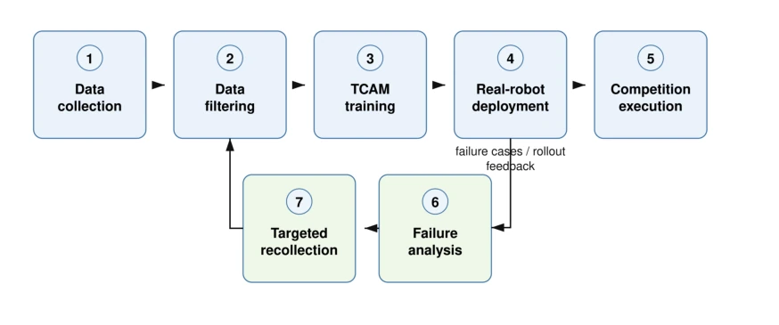
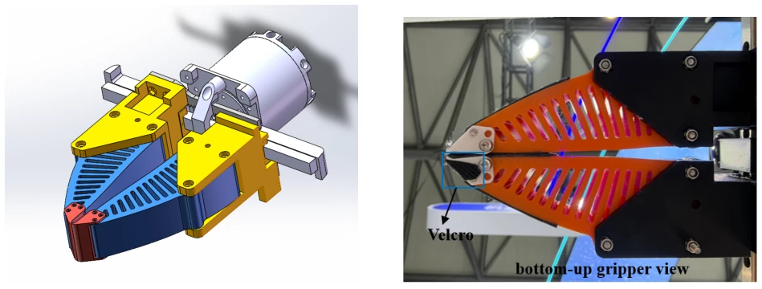
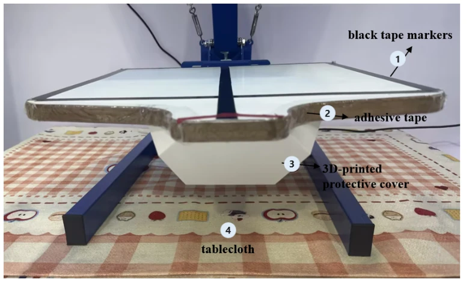

The RMC2 system's ability to win the WBCD 2026 Track 4 championship lies in its core: it avoided the trap of "pure algorithm omnipotence" and chose a pragmatic path of hardware-software synergy. In terms of hardware, custom grippers utilize Velcro and geometric structures to physically assist single-layer grasping, directly reducing the learning difficulty of the policy; this approach is far more reliable than simply relying on VLA models to guess contact states. The TCAM framework introduces a causal analysis closed loop, making data iteration targeted and avoiding ineffective trial and error. However, the system still has obvious shortcomings: the so-called "fully automatic" is actually discounted at the decision layer; the early termination strategy relies on manual monitoring rather than autonomous detection, which is a potential hazard in industrial scenarios. Additionally, there is a shortage of alignment-type samples in the training data, resulting in some shirts failing to meet surface flatness standards. Although the paper boasts about closed-loop learning, the results are essentially built upon massive human intervention and scenario-specific optimization. For the academic community pursuing generality, this solution appears somewhat "specialized"; but for competitions and specific production lines, this is undoubtedly a textbook-level engineering victory. If autonomous fault detection can be achieved in the future, it will be more competitive.
Deformable Manipulation has always been the "deep water zone" in the robotics field; compared to rigid objects, clothing has high-dimensional and partially observable states, significantly affected by gravity, friction, and stretching, where minor grasping point differences can lead to single-layer or multi-layer grasping failures [1]. The WBCD 2026 Track 4 task explicitly requires fully autonomous execution to obtain the highest score multiplier, forcing the system to break free from dependence on Teleoperation. Although recent Vision-Language-Action (VLA) systems [2][3] have demonstrated impressive generalization capabilities in general control, even introducing Embodied Memory [4] and Experience Learning [5], directly applying them to flexible manipulation still faces three major challenges: First, the contact state between the gripper and fabric is local and easily occluded, making it difficult to observe with standard viewpoints; Second, clothing deformation is extremely sensitive to minor action changes, requiring the policy to operate within a narrow physical success distribution; Third, single data collection is difficult to cover failure modes during deployment. Therefore, this study aims to reduce the physical interaction complexity that the policy needs to handle through co-design of hardware, perception, data, and learning, achieving high-reliability fully autonomous flexible manipulation.
The system overall follows a closed-loop process of "Perception - Decision - Execution - Analysis - Iteration". At the hardware level, based on the dual-arm ARX X5 platform, 3D-printed custom grippers were designed, physically improving single-layer grasping reliability through hard fingertips, Velcro-assisted layer flipping, and inward-tilted geometric structures. The perception system adopts a wrist-centered four-viewpoint design; the upper row of fisheye cameras provides task-level context, while the lower row of RGB cameras observes the gripper-fabric contact state at close range to solve occlusion problems. Data collection mixes UMI-style (portable, cross-scenario, 2-view) and real-machine demonstrations (4-view, force-compensated dragging), distinguishing view configurations via Prompts. The core learning framework is TCAM (TermiBrain Causal Action Model), which treats trajectories as causal interaction chains, analyzes the causal relationships between vision, contact, and actions through a semi-automatic workflow, and stores successful and failed trajectories into a trajectory memory bank. The policy is based on a multi-view VLA backbone network, outputting 30-step end-effector delta-pose action chunks, utilizing Action Chunking to improve temporal consistency. The entire process continuously optimizes the policy through iterative deployment, failure analysis, and targeted re-collection of data, rather than one-time training. The framework emphasizes causal analysis, guiding data re-collection through human confirmation of physical factors, ensuring the policy is fine-tuned against failure modes, thereby maximizing competition scores within limited time.
The final training set contains 600 mixed demonstration clips, of which approximately 200 come from UMI-style collection and 400 come from the real-machine ARX X5 platform, used for training after quality filtering. In the final WBCD 2026 competition, the system completed loading 25 T-shirts, of which 22 met the surface flatness requirements, with an average attempt time of about 23 seconds, securing first place in Track 4. Although the performance was excellent, post-competition analysis showed that alignment-type demonstrations were insufficiently representative in the training set, causing some shirts to fail to receive full alignment scores. Additionally, the system still relies on manual monitoring for early termination decisions rather than autonomous fault detection, limiting the recovery capability for long-term severe faults. Ablation experiments were not detailed in the text, but hardware adaptation (such as tray tape, high-contrast markers) and multi-view perception were confirmed to significantly improve visual cue stability. Future work will expand alignment data collection and evaluate effects, while planning to integrate autonomous fault detection to achieve a complete closed loop.
其他图片Other Figures

Figure 1: Overall system pipeline with data closed-loop feedback. The system starts from mixed UMI-style and real-robot data collection, followed by filtering, TCAM training, real-robot deployment, competition execution, failure analysis, and targeted recollection. Failure cases and rollout feedback are stored in trajectory memory and fed back into iterative policy refinement.

Figure 2: Custom gripper design.

Figure 3: Printing pallet and workspace adaptation. The rough wooden side edges of the pallet were covered with adhesive tape to reduce friction during T-shirt loading. A protective cover was added underneath the pallet to prevent the garment from being caught by protruding screws. High-contrast black tape markers on the pallet and a patterned tablecloth under the workspace were used to provide stronger visual references for the TCAM policy.